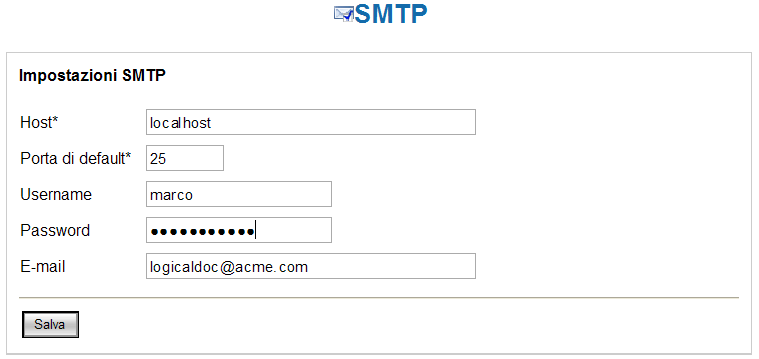

Configurare impostazioni smtp |
Il sistema offre la possibilità di inviare documenti via e-mail.
Tale funzionalità essenzialmente permette di generare una mail ad un indirizzo specificato contenente in allegato il documento selezionato.
Per poter sfruttare tale funzionalità è indispensabile configurare le impostazioni del server smtp (server di mail in uscita) sul sistema.
Accedere quindi alla maschera di configurazione con il percorso: Amministrazione --> Sistema --> SMTP.

Figura 46: Configurazione SMTP
Figura 46: Configurazione SMTP
Tutti i parametri della form sono obbligatori.
| Per verificare la corretta configurazione si consiglia di verificare il corretto invio di un documento via e-mail. | |